APOTTS AW22 - Skinfolk
Essx x Troubled Waters
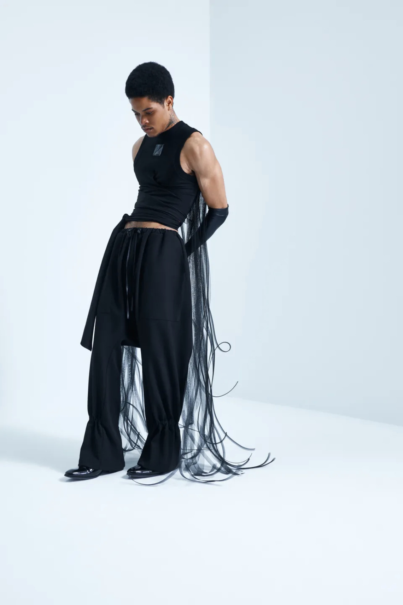
APOTTS Ecomm 25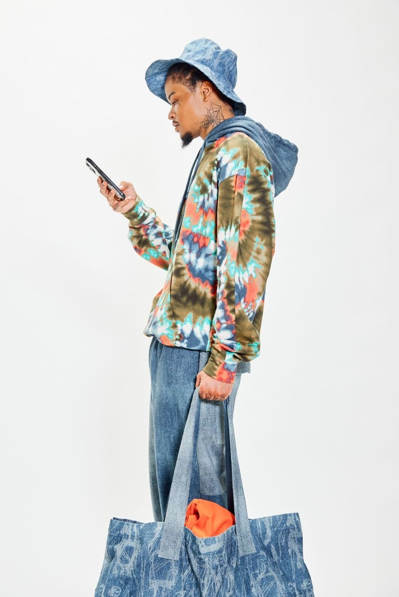
APOTTS SS24 - Urbanearth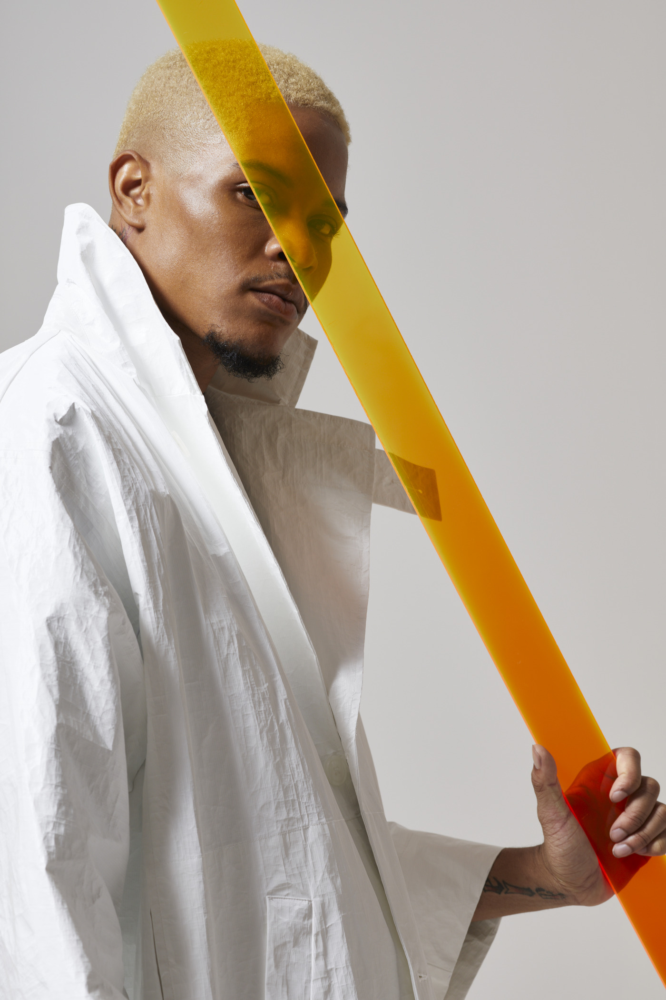
(b).STROY MOHAWK x (b).USBY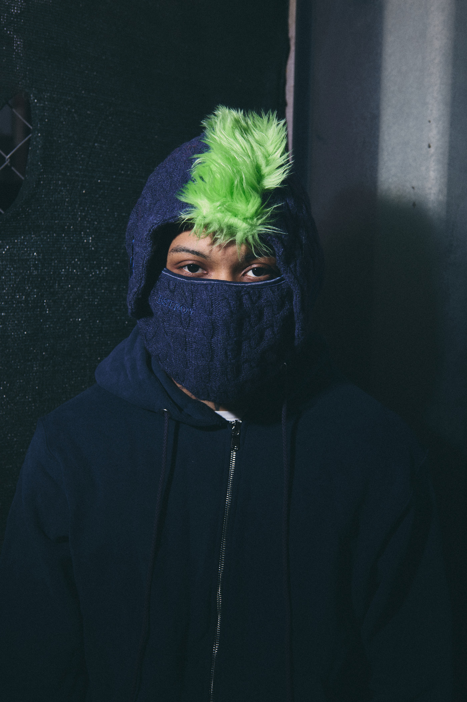
Daveed Baptist - Soaring High SS26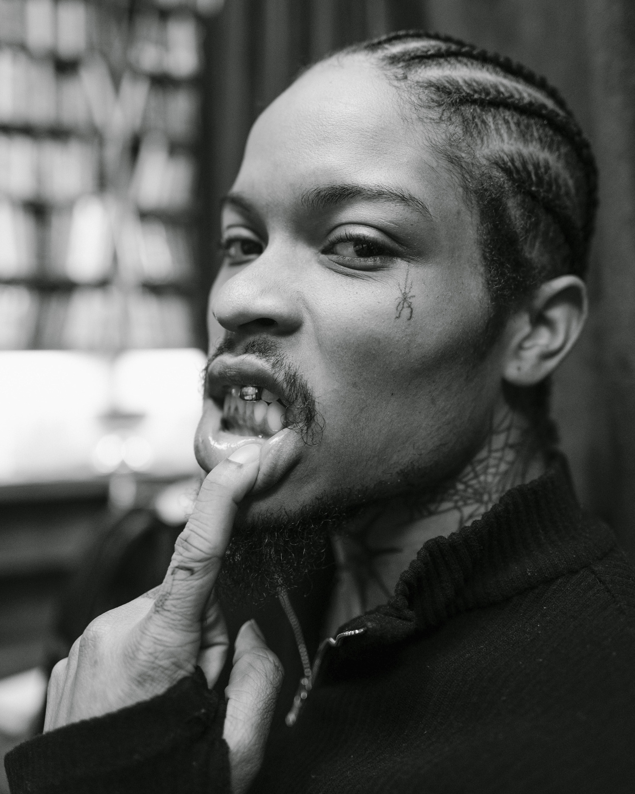
Essx Spring Summer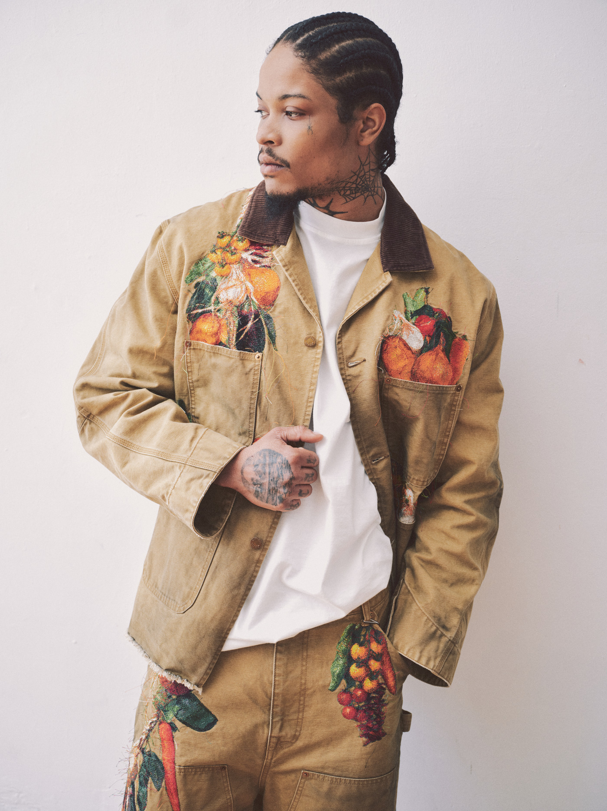
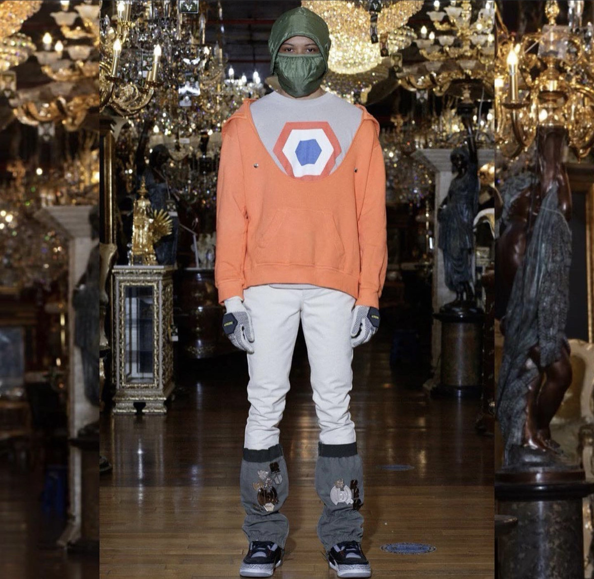
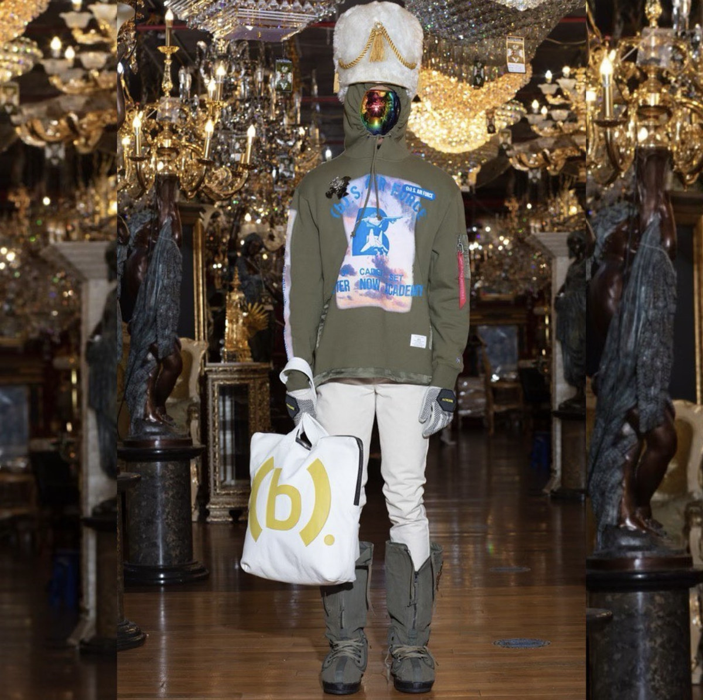
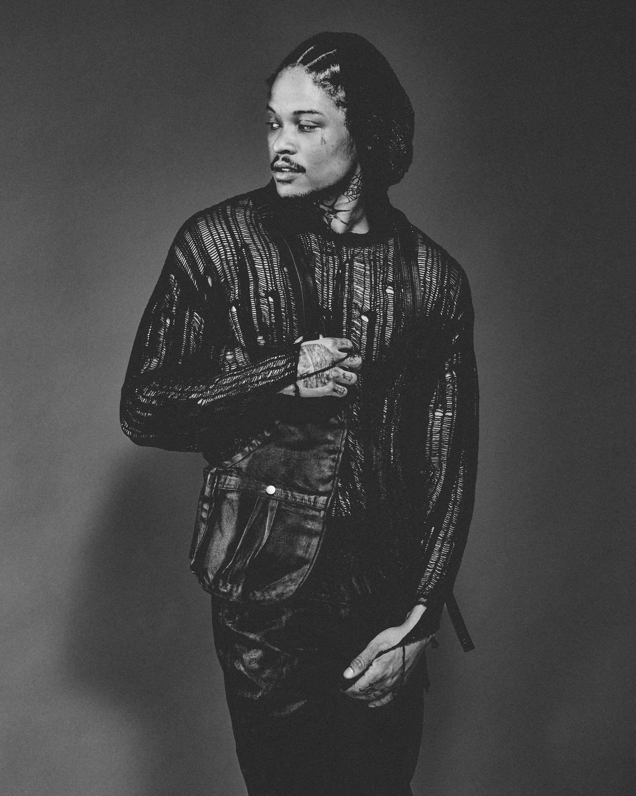
Noid Collision FW 23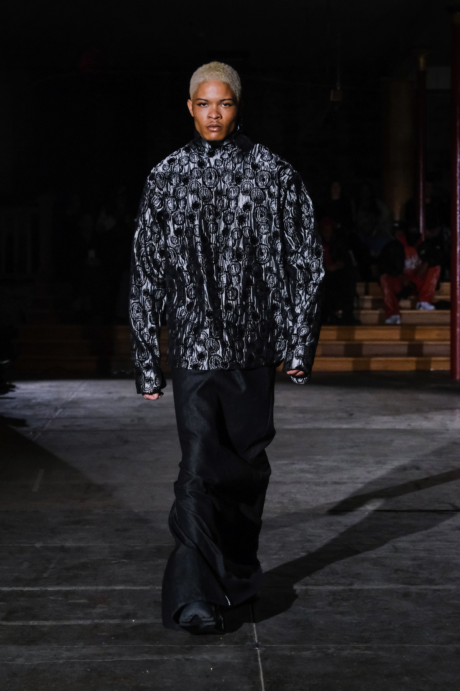
Office Mag x Heron Preston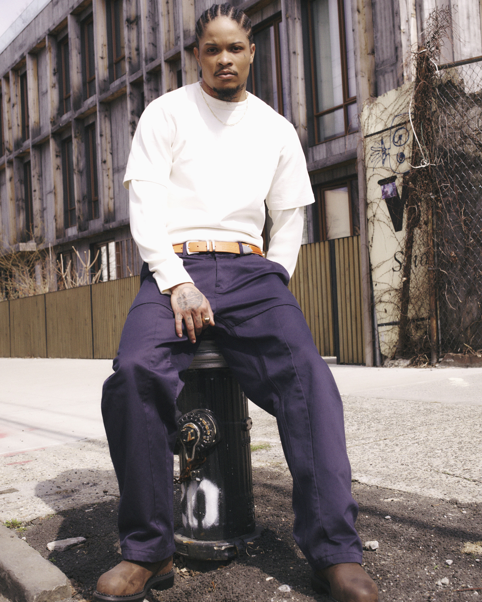
S Rousseau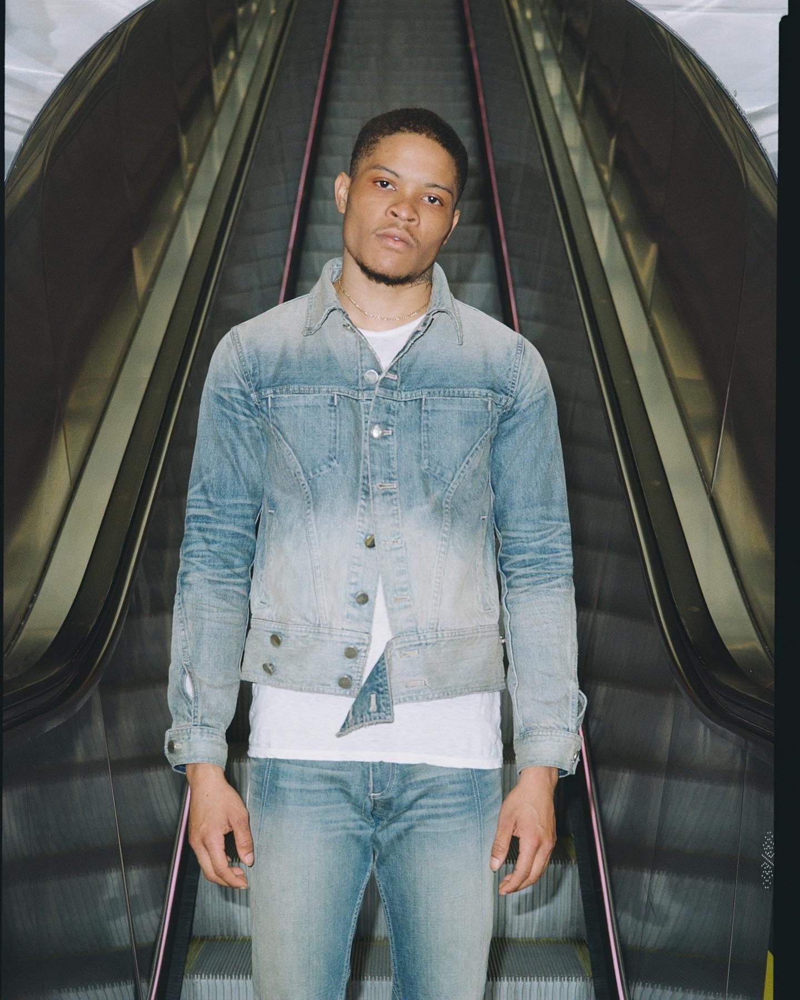
While It Lasted - Flanelle Magazine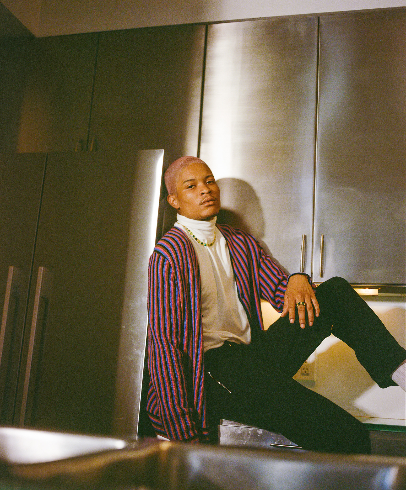